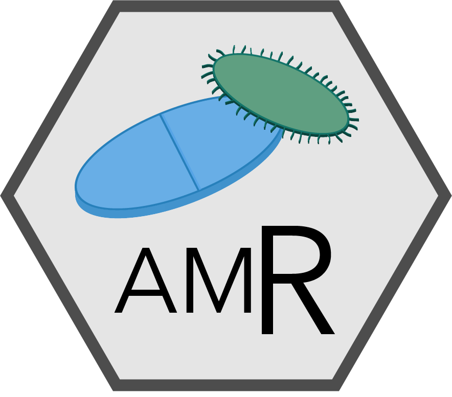

AMR PackageAMR.RdWelcome to the AMR package.
AMR is a free and open-source R package to simplify the analysis and prediction of Antimicrobial Resistance (AMR) and to work with microbial and antimicrobial properties by using evidence-based methods. It supports any table format, including WHONET/EARS-Net data.
We created this package for both academic research and routine analysis at the Faculty of Medical Sciences of the University of Groningen and the Medical Microbiology & Infection Prevention (MMBI) department of the University Medical Center Groningen (UMCG). This R package is actively maintained and free software; you can freely use and distribute it for both personal and commercial (but not patent) purposes under the terms of the GNU General Public License version 2.0 (GPL-2), as published by the Free Software Foundation.
This package can be used for:
Calculating antimicrobial resistance
Predicting antimicrobial resistance using regression models
Getting properties for any microorganism (like Gram stain, species, genus or family)
Getting properties for any antibiotic (like name, ATC code, defined daily dose or trade name)
Plotting antimicrobial resistance
Determining first isolates to be used for AMR analysis
Applying EUCAST rules
Determining multi-drug resistance organisms (MDRO)
Descriptive statistics: frequency tables, kurtosis and skewness
Matthijs S. Berends[1,2] Christian F. Luz[1], Erwin E.A. Hassing[2], Corinna Glasner[1], Alex W. Friedrich[1], Bhanu N.M. Sinha[1]
[1] Department of Medical Microbiology, University of Groningen, University Medical Center Groningen, Groningen, the Netherlands - rug.nl umcg.nl
[2] Certe Medical Diagnostics & Advice, Groningen, the Netherlands - certe.nl

On our website https://msberends.gitlab.io/AMR you can find a comprehensive tutorial about how to conduct AMR analysis, the complete documentation of all functions (which reads a lot easier than here in R) and an example analysis using WHONET data.
For suggestions, comments or questions, please contact us at:
Matthijs S. Berends
m.s.berends [at] umcg [dot] nl
Department of Medical Microbiology, University of Groningen
University Medical Center Groningen
Post Office Box 30001
9700 RB Groningen
If you have found a bug, please file a new issue at:
https://gitlab.com/msberends/AMR/issues